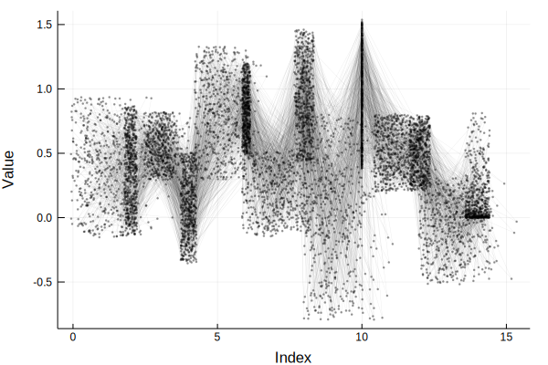

UncertainIndexValueDataset
Resampling UncertainIndexValueDatasets is done in the same manner as for uncertain values and UncertainDatasets.
See also the list of available sampling constraints.
Method documentation
No constraints
UncertainData.Resampling.resample — Methodresample(udata::UncertainIndexValueDataset) -> Tuple{Vector{Float64}, Vector{Float64}}Resample an uncertain index-value dataset in an element-wise manner.
UncertainData.Resampling.resample — Methodresample(udata::UncertainIndexValueDataset,
n::Int) -> Vector{Tuple{Vector{Float64}, Vector{Float64}}}Resample n realizations an uncertain index-value dataset in an element-wise manner.
Same constraint to both indices and data values
UncertainData.Resampling.resample — Methodresample(udata::UncertainIndexValueDataset,
constraint::Union{SamplingConstraint, Vector{SamplingConstraint}}) -> Tuple{Vector{Float64}, Vector{Float64}}Resample an uncertain index-value dataset in an element-wise manner.
Enforces the provided sampling constraint to all uncertain values in the dataset, both indices and data values.
If a single constraint is provided, then that constraint will be applied to all values. If a vector of constraints (as many as there are values) is provided, then the constraints are applied element-wise to both the indices and the data values.
UncertainData.Resampling.resample — Methodresample(udata::UncertainIndexValueDataset,
constraint::Union{SamplingConstraint, Vector{SamplingConstraint}},
n::Int) -> Tuple{Vector{Float64}, Vector{Float64}}Resample n realizations of an uncertain index-value dataset in an element-wise manner.
Enforces the provided sampling constraint to all uncertain values in the dataset, both indices and data values.
If a single constraint is provided, that constraint will be applied to all values. If a vector of constraints (as many as there are values) is provided, then the constraints are applied element-wise to both the indices and the data values.
Different constraints to indices and data values
UncertainData.Resampling.resample — Methodresample(udata::UncertainIndexValueDataset,
constraint_idxs::Union{SamplingConstraint, Vector{SamplingConstraint}},
constraint_vals::Union{SamplingConstraint, Vector{SamplingConstraint}}) -> Tuple{Vector{Float64}, Vector{Float64}}Resample an uncertain index-value dataset in an element-wise manner.
Enforces separate sampling constraints to the indices and to the data values.
If a single constraint is provided, that constraint will be applied to all values. If a vector of constraints (as many as there are values) is provided, then the constraints are applied element-wise.
UncertainData.Resampling.resample — Methodresample(udata::UncertainIndexValueDataset,
constraint_idxs::Union{SamplingConstraint, Vector{SamplingConstraint}},
constraint_vals::Union{SamplingConstraint, Vector{SamplingConstraint}},
n::Int) -> Vector{Tuple{Vector{Float64}, Vector{Float64}}}Resample n realizations of an uncertain index-value dataset in an element-wise manner.
Enforces separate sampling constraints to the indices and to the data values.
If a single constraint is provided, that constraint will be applied to all values. If a vector of constraints (as many as there are values) is provided, then the constraints are applied element-wise.
Examples
Same constraint for all uncertain values
First, let's define some data to work on.
using UncertainData, Plots
gr()
r1 = [UncertainValue(Normal, rand(), rand()) for i = 1:10]
r2 = UncertainValue(rand(10000))
r3 = UncertainValue(Uniform, rand(10000))
r4 = UncertainValue(Normal, -0.1, 0.5)
r5 = UncertainValue(Gamma, 0.4, 0.8)
u_values = [r1; r2; r3; r4; r5]
u_timeindices = [UncertainValue(Normal, i, rand(Uniform(0, 1))) for i = 1:length(u_values)]
uindices = UncertainDataset(u_timeindices);
udata = UncertainDataset(u_values);
# Now, gather uncertain indices and uncertain data values
x = UncertainIndexValueDataset(uindices, udata)By default, the plot recipe shows the median and 33rd to 67th percentile range error bars. Let's use the default plot recipe, and add some line plots with resampled realizations of the dataset.
p = plot(x)
for i = 1:100
s = resample(x, TruncateQuantiles(0.33, 0.67), TruncateQuantiles(0.33, 0.67))
scatter!(p, s[1], s[2], label = "", lw = 0.3, lα = 0.1, lc = :black,
mc = :black, ms = 0.5, mα = 0.4)
plot!(p, s[1], s[2], label = "", lw = 0.3, lα = 0.1, lc = :black,
mc = :black, ms = 0.5, mα = 0.4)
end
p
This would of course also work with any other sampling constraint that is valid for your dataset. Let's demonstrate with a few more examples.
Different constraints for indices and data values
Let's say that we want to treat the uncertainties of the indices (time, in this case) separately from the uncertainties of the data values.
First, let's define a dataset to work on.
using UncertainData, Plots
gr()
r1 = [UncertainValue(Normal, rand(), rand()) for i = 1:10]
r2 = UncertainValue(rand(10000))
r3 = UncertainValue(Uniform, rand(10000))
r4 = UncertainValue(Normal, -0.1, 0.5)
r5 = UncertainValue(Gamma, 0.4, 0.8)
u_values = [r1; r2; r3; r4; r5]
u_timeindices = [UncertainValue(Normal, i, rand(Uniform(0, 1))) for i = 1:length(u_values)]
uindices = UncertainDataset(u_timeindices);
udata = UncertainDataset(u_values);
# Now, gather uncertain indices and uncertain data values
x = UncertainIndexValueDataset(uindices, udata)Let's pretend every 2nd time index has many outliers which we don't trust, so we restrict resampling of those values to the 30th to 70th percentile range. For the remaining time indices, there are some outliers outliers, but these are concentrated at the lower end of the distributions, so we'll resample by truncating the furnishing distributions below at the 10th percentile.
For the data values, we pretend that the same applies: every 2nd value has a bunch of outliers, so we restrict the support of the distributions of those uncertain values to 1.5 standard deviations around the mean. For the remaining data values, we'll resample from the the 20th to 80th percentile range.
Now, define the constraints as described:
# Define the constraints
n_vals = length(x)
index_constraints = Vector{SamplingConstraint}(undef, n_vals)
value_constraints = Vector{SamplingConstraint}(undef, n_vals)
for i = 1:n_vals
if i % 2 == 0
index_constraints[i] = TruncateQuantiles(0.3, 0.7)
value_constraints[i] = TruncateStd(1.5)
else
index_constraints[i] = TruncateLowerQuantile(0.1)
value_constraints[i] = TruncateQuantiles(0.2, 0.8)
end
endFinally, plot the realizations.
# Resample a bunch of times and plot the realizations both as lines as scatter points
p = plot(xlabel = "Index", ylabel = "Value")
for i = 1:500
s = resample(x, index_constraints, value_constraints)
scatter!(p, s[1], s[2], label = "", lw = 0.3, lα = 0.1, lc = :black,
mc = :black, ms = 0.5, mα = 0.4)
plot!(p, s[1], s[2], label = "", lw = 0.3, lα = 0.1, lc = :black,
mc = :black, ms = 0.5, mα = 0.4)
end
p